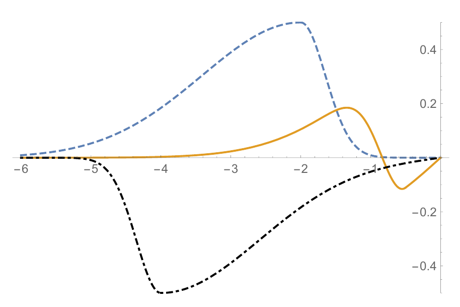
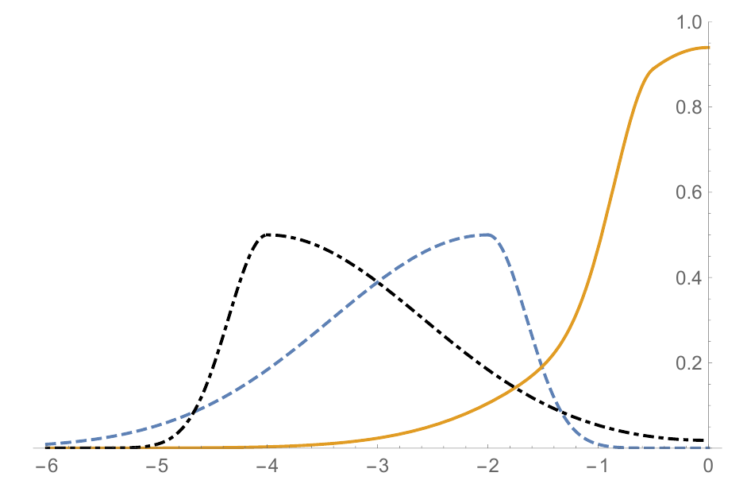
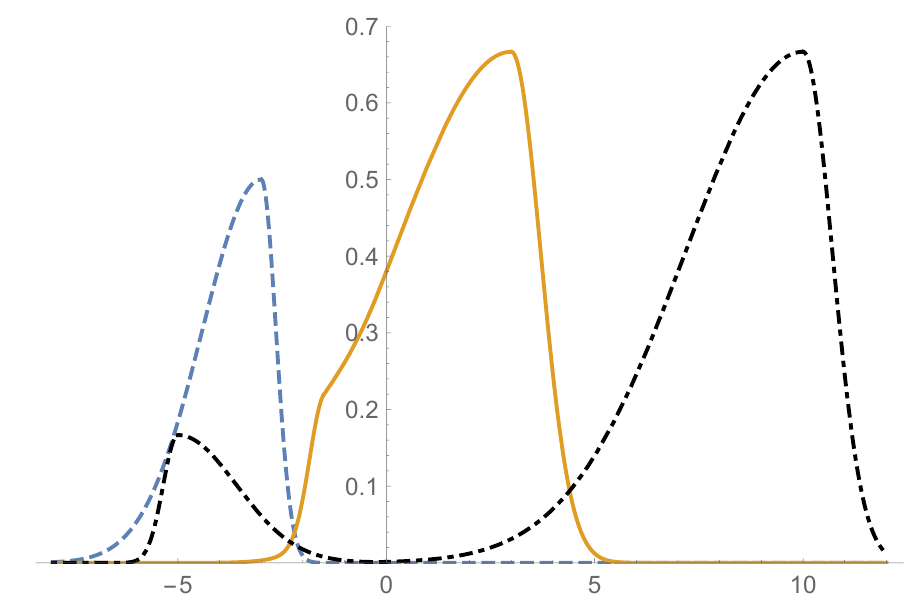

3 Boundaries and Interfaces
You find content related to this lecture in the textbooks:
We have seen that the solutions of the wave equation predict right- and left-moving waves that travel without changing their shapes. Eventually, in the real world at least, these waves are going to reach the end of the string. What will happen then? We know that the energy that is carried by the wave can not simply disappear. So we expect the wave to be reflected. But how is it reflected in detail?
3.1 Semi-infinite string with fixed end
Let us consider the case where a right-moving wave hits the right end of the string. We choose the \(x\)-coordinate so that the end is at \(x=0\). Thus we consider the wave equation on the left half-line \(-\infty<x<0\). In this section we consider the case where the end of the string is fixed, so we impose the boundary condition \[y(0,t)=0~~~\text{ for all } t\in \mathbf{R}. \tag{3.1}\] This is known as a Dirichlet boundary condition.
We recall the general solution of the wave equation: \[y(x,t)=f(x-ct)+g(x+ct). \tag{3.2}\] As we know, the function \(f\) gives the shape of the right-moving wave. Imposing the boundary condition will tell us what \(g\) has to be, i.e., it will determine the shape of the left-moving reflected wave. Substituting the general solution into the boundary condition gives \[y(0,t)=f(-ct)+g(ct) = 0. \tag{3.3}\] This holds for any value of \(t\), so \[g(s)=-f(-s)~~~\text{ for all } s\in \mathbf{R}. \tag{3.4}\] This tells us that the reflected wave is the negative of the incoming wave and is flipped front-to-back. Thus the solution is \[y(x,t)=f(x-ct)-f(-x-ct)~~\text{ for all }x\leq 0. \tag{3.5}\] This is illustrated in Figure 3.1.

3.2 Semi-infinite string with free end
Consider now a semi-infinite string (\(0<x<\infty\)) with a free end at \(x=0\) (e.g. the end of the string can be attached to a small ring, which in turn can slide along a vertical rod without friction). This means that the vertical component of the tension force applied to the end of the string must be zero, which in turn means the string must be horizontal at \(x\), i.e., we have the boundary condition \[ \partial_x y(0,t) =0~~~\text{ for all }t\in\mathbb{R}. \tag{3.6}\] Conditions which specify the value of the normal derivative of the unknown function at the boundary are called Neumann conditions. So, here we have the homogeneous Neumann condition at \(x=0\). We now substitute the general solution. First we calculate its derivative \[\partial_x y(x,t)=f'(x-ct)+g'(x+ct) \tag{3.7}\] and thus the boundary condition says that \[\partial_x y(0,t)=f'(-ct)+g'(ct)=0~~~\text{ for all }t\in\mathbb{R}. \tag{3.8}\] Integrating this gives \[\frac{-1}{c}f(-ct)+\frac{1}{c}g(ct)=\text{constant}. \tag{3.9}\] Changing the constant only moves the string up or down on the y axis. We choose it to be zero. Because the boundary condition holds for all times, we have that \[g(s)=f(-s)~~~\text{ for all }s\in\mathbb{R}. \tag{3.10}\] Thus the reflected wave has the same shape and the same sign as the incoming wave, but it is still flipped front-to-back.Thus the solution is \[y(x,t)=f(x-ct)+f(-x-ct)~~\text{ for all }x\leq 0. \tag{3.11}\] This is illustrated in Figure 3.2.

3.3 Reflection at a change of density
Consider two semi-infinite strings joined at the origin. The string on the left (\(x<0\)) has constant density \(\rho_1\) and the string on the right (\(x>0\)) has constant density \(\rho_2\). Let \(y_1\) and \(y_2\) be the displacements of the two strings. Since the strings have different densities, the wave speed in the two strings will be different: \[ c_1=\sqrt{\frac{T}{\rho_1}} \quad \text{and} \quad c_2=\sqrt{\frac{T}{\rho_2}}. \tag{3.12}\] Suppose that we have a wave travelling to the right on the first string (an incident wave). When the wave meets the change in density, it will be partially reflected (back to the region \(x<0\)) and partially transmitted (forward to the region \(x>0\)). Waves travelling in the interval \(x\in(-\infty,0)\) are described by the wave equation with wave speed \(c_1\); waves travelling in the interval \(x\in(0,\infty)\) are described by the wave equation with wave speed \(c_2\). This is illustrated in Figure Figure 3.3.

Therefore, we can write \[ y(x,t)=\begin{cases} y_1(x,t)=f_I(x-c_1 t) + f_R(x+c_1 t), &x<0 \\ y_2(x,t)=f_T(x-c_2 t), &x>0 \end{cases} \tag{3.13}\] where \(f_I\), \(f_R\) and \(f_T\) represent the incident, reflected and transmitted waves, respectively. At the point of contact of the two strings (\(x=0\)), we impose the following two conditions: \[ y_1(0,t) = y_2(0,t) \quad \text{for all} \ t, \tag{3.14}\] \[ \partial_x y_1(0,t) = \partial_x y_2(0,t) \quad \text{for all} \ t. \tag{3.15}\] Condition 3.14 says that the solution for the combined string should be continuous at \(x=0\) (because the strings are attached to each other at the point). Condition 3.15 states that the slopes of the strings at \(x=0\) should be the same (if this is not so, there will be a finite force applied to an infinitesimal part of the combined string at \(x=0\), producing unphysical infinite acceleration).
Suppose that the incident wave is given, i.e. the function of one variable \(f_I\) is known. Can we find \(f_R\) and \(f_T\)?
Substitution of Eq. 3.13 into condition Eq. 3.14 yields \[ f_I(-c_1 t) + f_R(c_1 t) = f_T(-c_2 t) \quad \text{for all} \ t \tag{3.16}\] or equivalently (writing \(s=c_1 t\)) \[ f_I(-s) + f_R(s) = f_T\left(-\frac{c_2}{c_1} \, s\right) \quad \text{for all} \ s . \tag{3.17}\] Similarly, on substituting Eq. 3.13 into condition Eq. 3.15, we find that \[ f_I'(-c_1 t) + f_R'(c_1 t) = f_T'(-c_2 t) \quad \text{for all} \ t \tag{3.18}\] or \[ f_I'(-s) + f_R'(s) = f_T'\left(-\frac{c_2}{c_1} \, s\right) \quad \text{for all} \ s. \tag{3.19}\] Integrating this equation in \(s\), we get \[ -f_I(-s) + f_R(s) = -\frac{c_1}{c_2} \, f_T\left(-\frac{c_2}{c_1} \, s\right) \quad \text{for all} \ s . \tag{3.20}\] Eliminating \(f_R(s)\) from Eq. 3.17 and Eq. 3.20, we obtain \[ 2f_I(-s) = \left(1+\frac{c_1}{c_2}\right) \, f_T\left(-\frac{c_2}{c_1} \, s\right) \quad \text{for all} \ s . \tag{3.21}\] or, equivalently, \[ f_T(\tilde{s}) = \frac{2c_2}{c_2+c_1} \, f_I\left(\frac{c_1}{c_2} \, \tilde{s}\right) \quad \text{for all} \ \tilde{s} \tag{3.22}\] where \(\tilde{s}=-(c_2/c_1)s\). Eq. 3.22 defines the function (of one variable) \(f_T\) in terms of known function \(f_I\).
To find \(f_R\), we substitute Eq. 3.22 into Eq. 3.17. This yields the formula \[ f_R(s) = \frac{c_2-c_1}{c_2+c_1} \, f_I\left(- s\right) \quad \text{for all} \ s. \tag{3.23}\] Finally, on substituting Eq. 3.22 and Eq. 3.23 into Eq. 3.13, we get the solution formula \[ y(x,t)=\begin{cases} f_I(x-c_1 t) + A_R f_I(-x-c_1 t), &x<0 \\ A_T f_I\left(\frac{c_1}{c_2}(x-c_2 t)\right), &x>0 \end{cases} \tag{3.24}\] where \(A_R\) (the ratio of the amplitude of the reflected wave to that of the incident wave) and \(A_T\) (the ratio of the amplitude of the transmitted wave to that of the incident wave) are given by \[ \quad A_R=\frac{c_2-c_1}{c_2+c_1}, \quad A_T=\frac{2c_2}{c_2+c_1}. \tag{3.25}\]
To check whether our answer makes sense, it is useful to consider a few limit cases.
If \(\rho_1=\rho_2\), then \(c_1=c_2\), and we have \(A_R=0\) and \(A_T=1\) (as one would expect for an infinite homogeneous string).
If \(\rho_1\ll\rho_2\) (the first string is much lighter than the second one), then \(c_1\gg c_2\), and we have \(A_R\approx -1\) and \(A_T=0\) (so that the heavy string effectively arrests the displacement at \(x=0\) as if the right end of the first string was fixed).
If \(\rho_1\gg\rho_2\) (the first string is much heavier than the second one), then \(c_1\ll c_2\), and we have \(A_R\approx 1\) and \(A_T=2\) (so that the light second string does not effect the displacement at \(x=0\) as if the right end of the first string was free).